ORDO is a speculative design project done at Hongik Univ. Set in 2050, as extreme weather becomes the norm, ORDO envisions a future where humans can buy the weather using cloud seeding technology. The project poses a series of questions. What would a future look like where humans can control the weather? Who would hold that power? Would controlling the weather create a utopia or a dystopia? Would you dare to order your ideal weather?
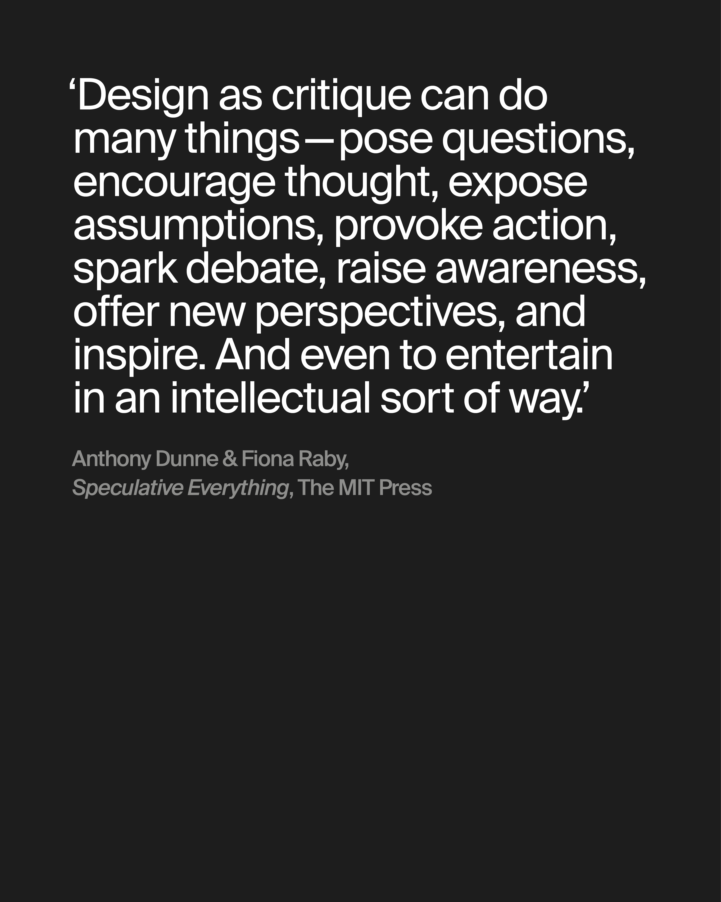
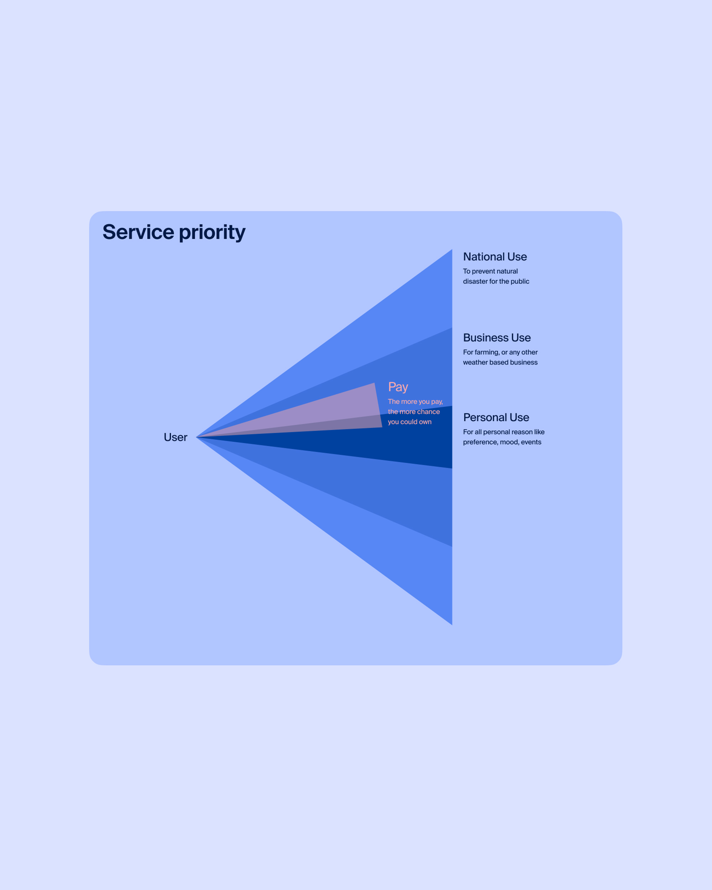
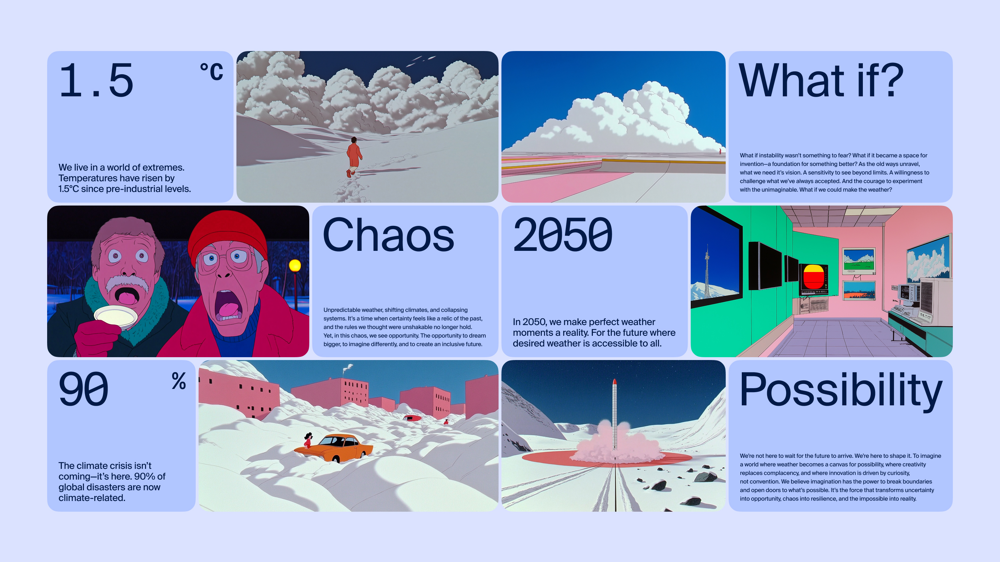
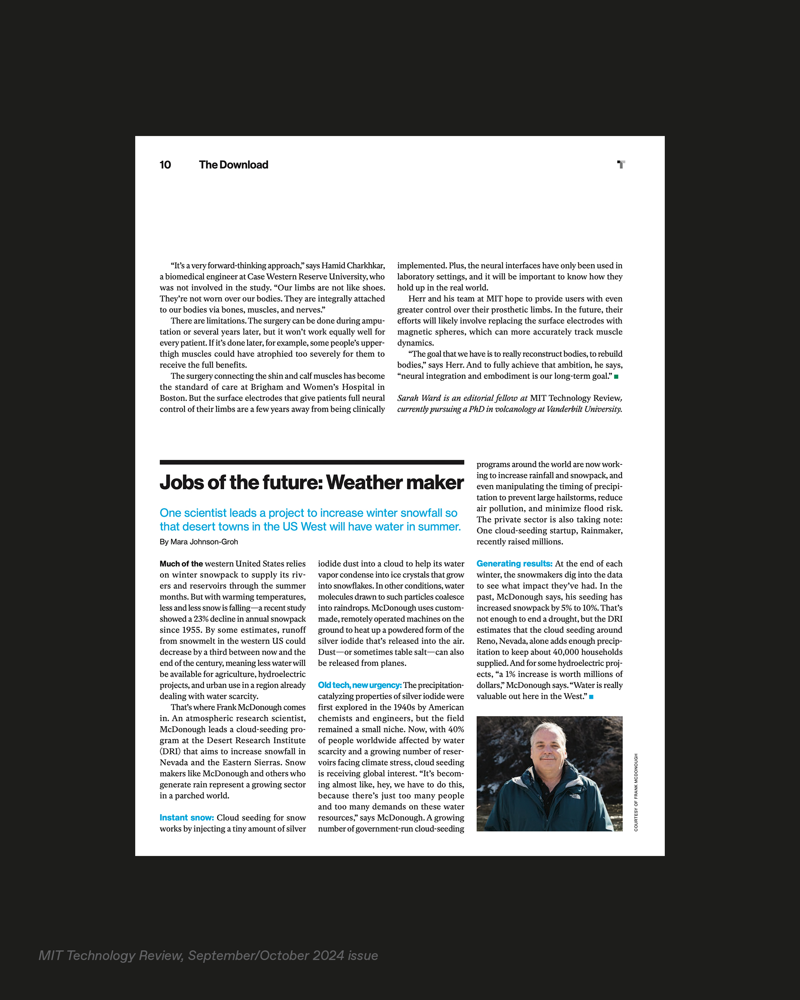
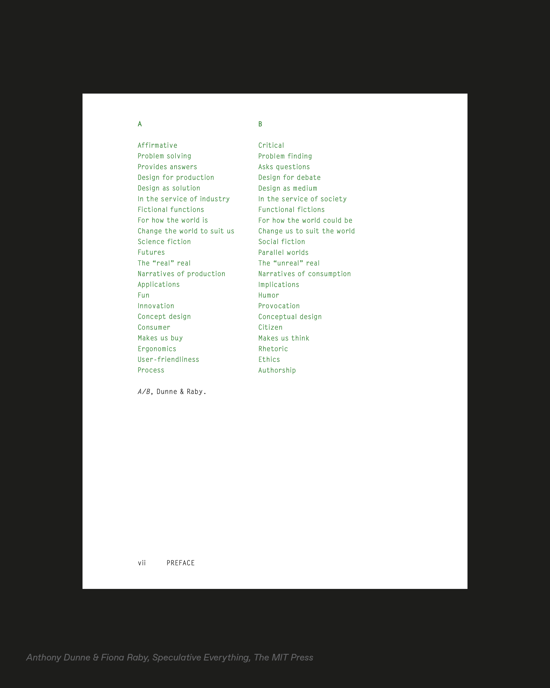
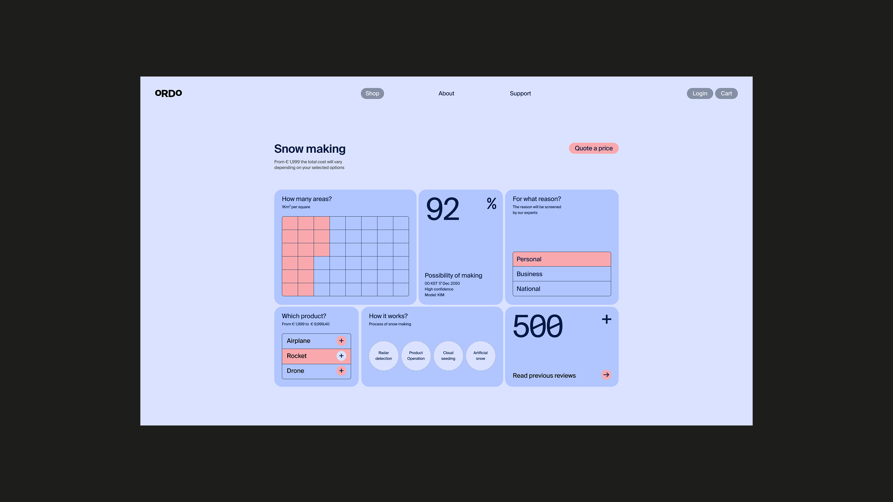
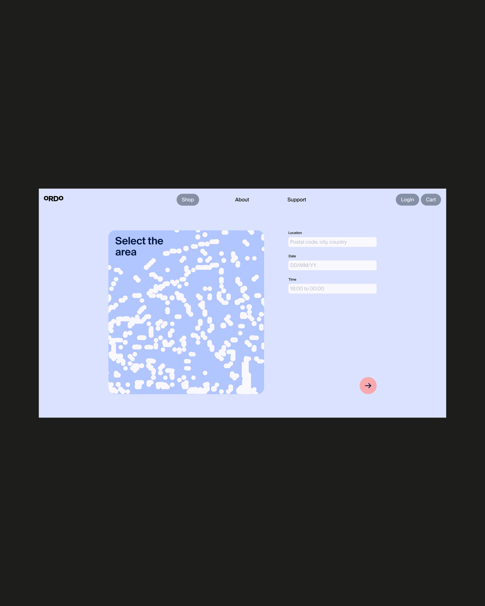
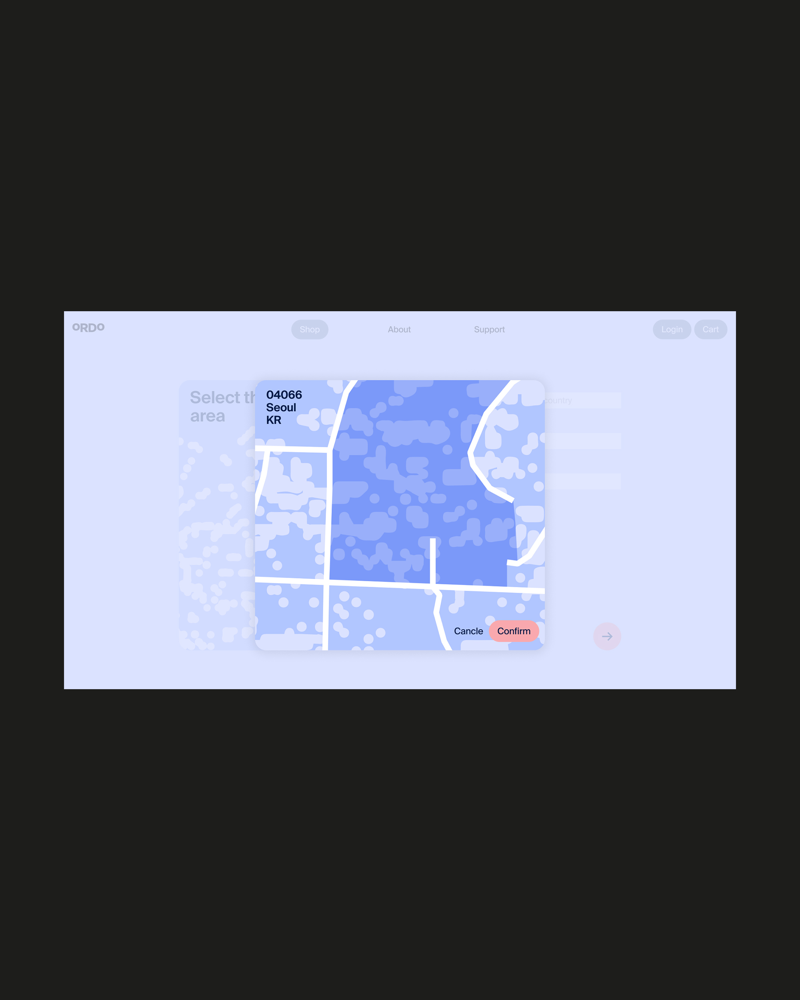
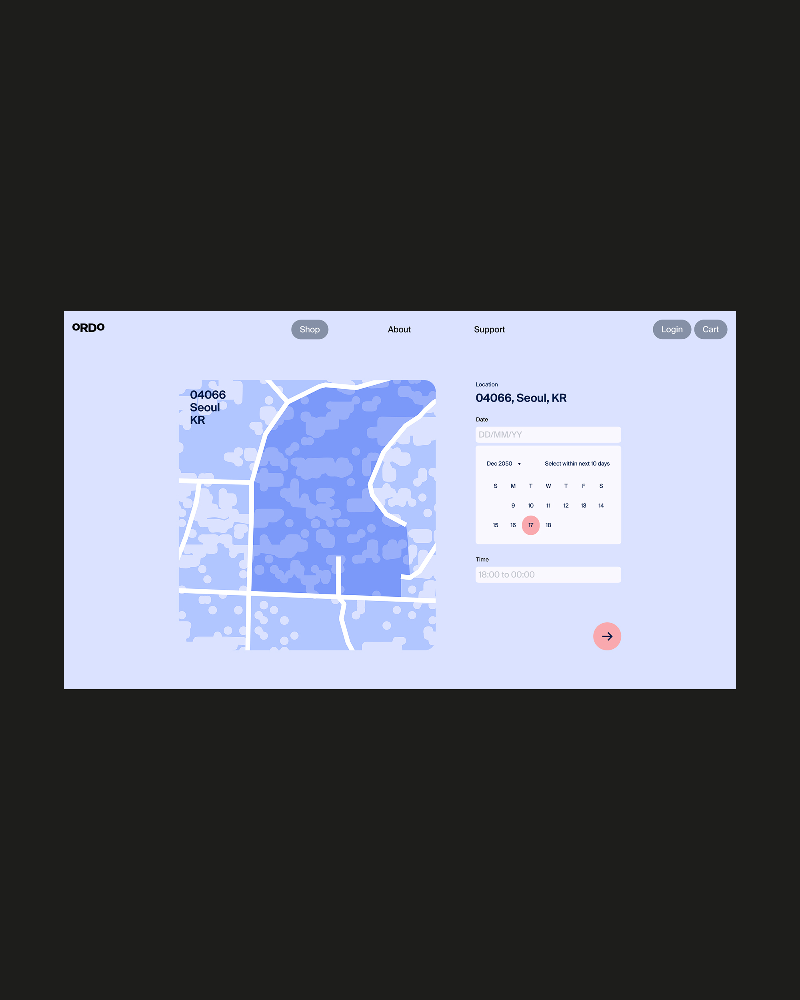
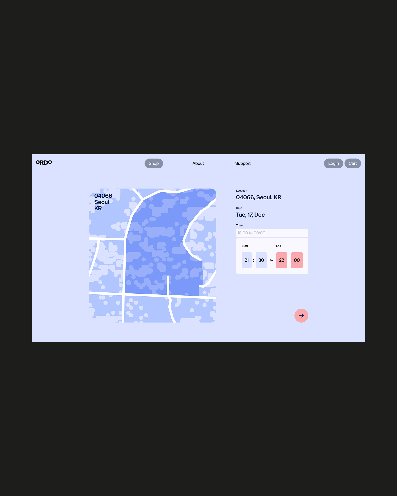
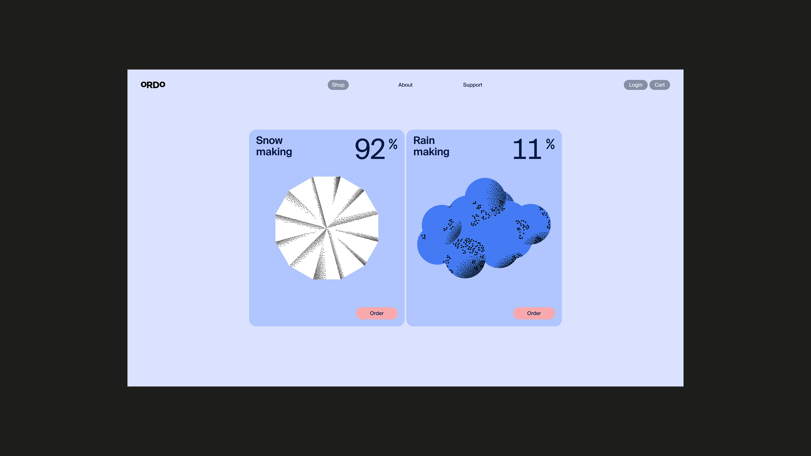
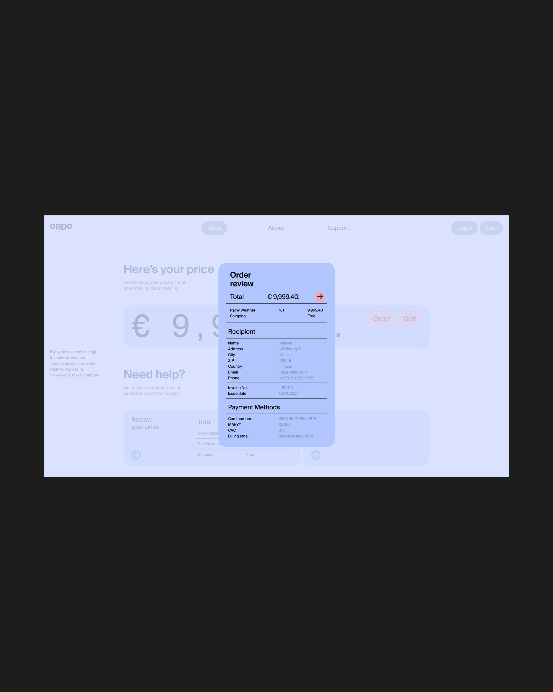
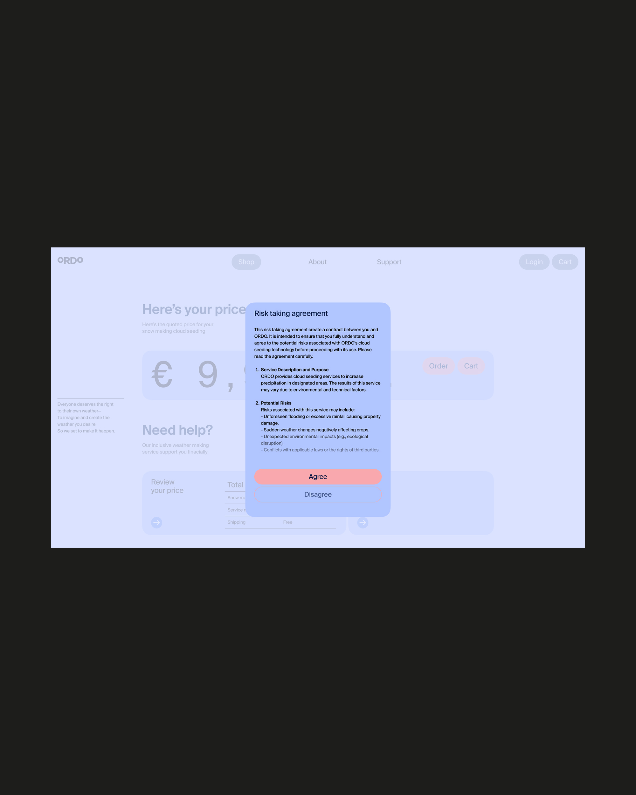